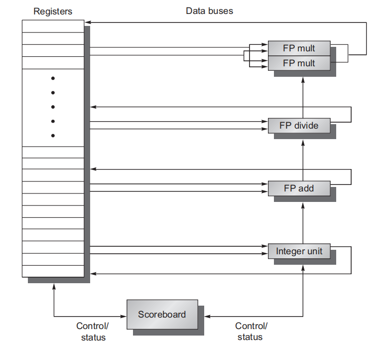
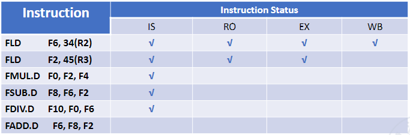
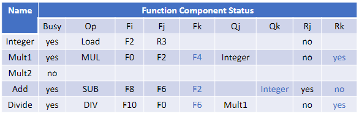
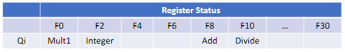
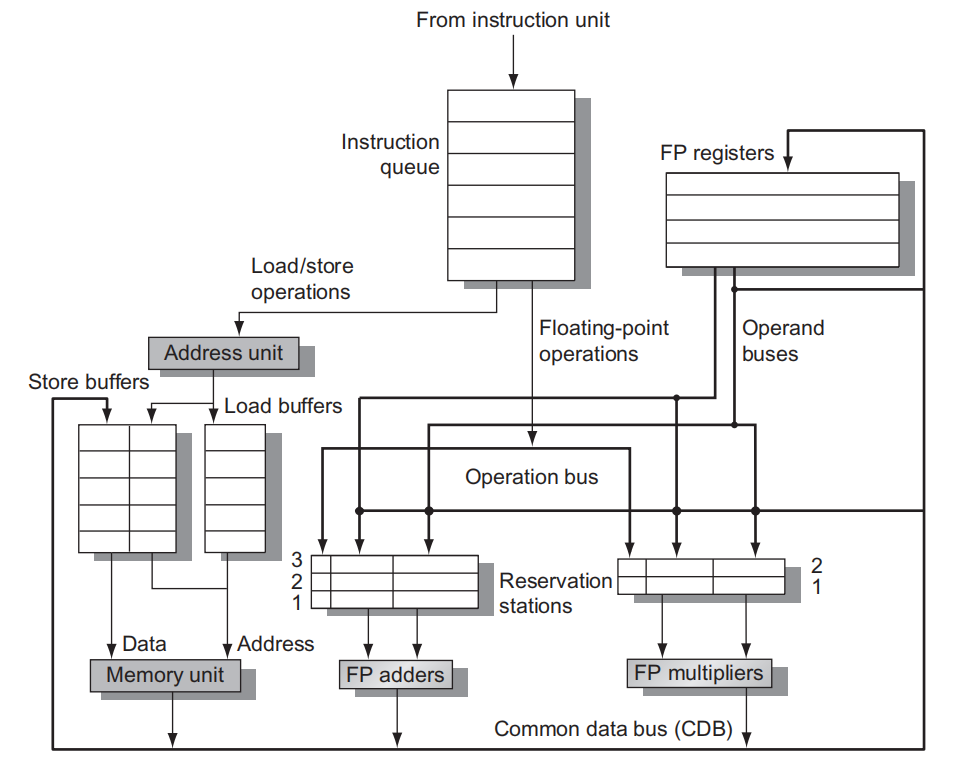
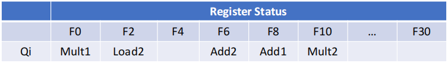
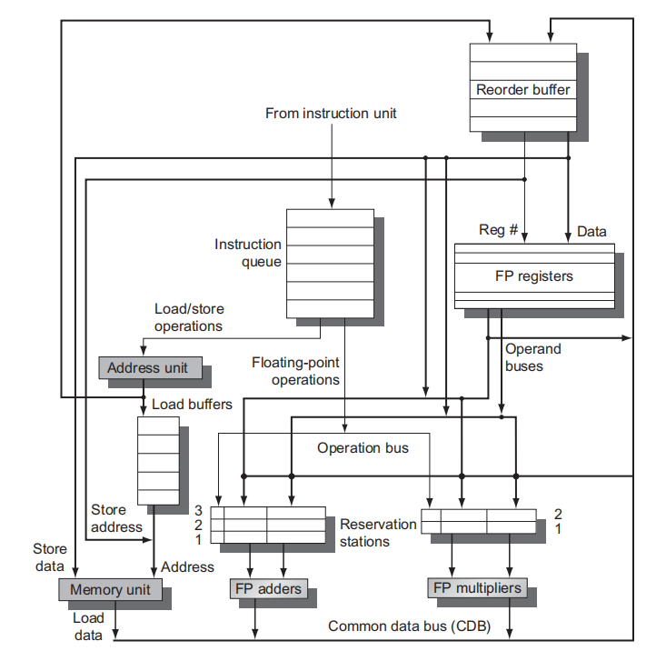
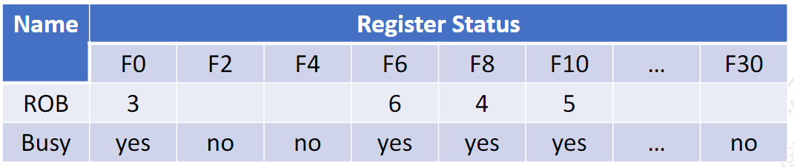

ILP
相关
共有 3 种不同类型的相关:数据相关(也称为真数据相关)、名称相关和控制相关。
- Data Dependences：指令i生成的结果被指令j用到，那么我们说指令j数据相关与指令i。这个相关可以传递。如果两条指令是数据相关的，那它们必须按顺序执行，不能同时执行或不能完全重叠执行。
- Name Dependences：当两条指令使用相同的寄存器或存储器位置（称为名称），但与该名称相关的指令之间并没有数据流动时，就会发生名称相关。
- Data Hazards：只要指令间存在名称相关或数据相关，而且它们非常接近，足以使执行期间的重叠改变对相关操作数的访问顺序，那就会存在冒险。有WAR(name dependence), RAW(data dependence), WAW冒险。
- Control Dependences
在RISC-V流水线中，写回只在最后进行，不会出现WAR和WAW的竞争。但是在乱序执行中会出现。比如下面的add和sub就会出现读后写。RAW是Data Dependence，WAR和WAW是Name Dependence，其中WAW又叫 Output-dependence，WAR又叫Anti-dependence。
fdiv.d f0,f2,f4
fadd.d f10,f0,f8
fsub.d f8,f8,f14
Scoreboard
执行流程
- Issue: If a functional unit for the instruction is free and no other active instruction has the same destination register with (和src和dst都不一样), the scoreboard issues the instruction to the functional unit and updates its internal data structure.
- Read operands: The scoreboard monitors the availability of the source operands. A source operand is available if no earlier issued active instruction is going to write it. When the source operands are available, the scoreboard tells the functional unit to proceed to read the operands from the registers and begin execution.
- Execution—The functional unit begins execution upon receiving operands. When the result is ready, it notifies the scoreboard that it has completed execution.
- Write result—Once the scoreboard is aware that the functional unit has completed execution, the scoreboard checks for WAR hazards and stalls the completing instruction, if necessary.
记录信息
以下面的程序为例
FLD F6, 34(R2)
FLD F2, 45(R3)
FMUL.D F0, F2, F4
FSUB.D F8, F2, F6
FDIV.D F10, F0, F6
FADD.D F6, F8, F2
要记录的信息一共有三张表：
-
记录指令执行到哪个阶段了

-
记录执行结构的状态。我们介绍Scoreboard算法一般都是用这个例子，有2个乘法器、1个加法器、1个除法器和一个load/save运算器。
- Busy: issue之后，执行元件就应该是busy了，不能再让同类指令发射，否则就结构竞争了，一直到write完成之后Busy状态才结束。
- Fi Fj Fk: 目的操作数，源操作数1，源操作数2
- Qj Qk: 如果有，表示源操作数正在等待其他执行元件执行完，避免数据竞争。
- Rj Rk == yes :operand is ready but not read
- Rj Rk == no & Q == null :operand is read
- Rj Rk == no & Q != null :operand is not ready

-
记录寄存器的使用状态

如何解决冲突
- 结构冲突：我们会记录执行部件的busy情况，从issue之后，就标记成busy，直到write完成。
Tomasulo
执行流程
- Issue - Get the next instruction from the head of the instruction queue, which is maintained in FIFO order to ensure the maintenance of correct data flow.
- If there is a matching reservation station that is empty, issue the instruction to the station with the operand values, if they are currently in the registers.
- If there is not an empty reservation station, then there is a structural hazard, and the instruction issue stalls until a station or buffer is freed.
- If the operands are not in the registers, keep track of the functional units that will produce the operands. This step renames registers, eliminating WAR and WAW hazards. (This stage is sometimes called dispatch in a dynamically scheduled processor.)
- Execute -
- If one or more of the operands is not yet available, monitor the common data bus while waiting for it to be computed. When an operand becomes available, it is placed into any reservation station awaiting it.
- When all the operands are available, the operation can be executed at the corresponding functional unit. By delaying instruction execution until the operands are available, RAW hazards are avoided.
- Write result - When the result is available, write it on the CDB and from there into the registers and into any reservation stations (including store buffers) waiting for this result. Stores are buffered in the store buffer until both the value to be stored and the store address are available; then the result is written as soon as the memory unit is free.
Tomasulo和Scoreboard的重要区别在于：Tomasulo中，指令发射到Reservation station后，源寄存器号都会丢弃掉，取而代之的是Reservation station的标签或者是真实的值。这样就顺便完成了rename的工作。
记录信息
Each reservation station has seven fields:
- Op - The operation to perform on source operands S1 and S2.
- Qj, Qk - The reservation stations that will produce the corresponding source operand; a value of zero indicates that the source operand is already available in Vj or Vk, or is unnecessary.
- Vj, Vk - The value of the source operands. Note that only one of the V fields or the Q field is valid for each operand. For loads, the Vk field is used to hold the offset field.
- A - Used to hold information for the memory address calculation for a load or store. Initially, the immediate field of the instruction is stored here; after the address calculation, the effective address is stored here.
- Busy - Indicates that this reservation station and its accompanying functional unit are occupied.
除此外，还需要记录每个寄存器的状态，在等待哪个执行部件的输出（或者说被重命名成什么寄存器了）。

如何解决冲突
- RAW: 当我们ISSUE指令的时候，如果发现我们的操作数还没有就绪（可以查看Register Status表），就指向写那个寄存器的Reservation Station
- WAR：当我们读取寄存器的时候，如果就绪，就直接把寄存器的值读过来，而不需要读取他的序号。（Vi，Vj）
- WAW：我们在考虑冲突的时候并没有考虑要写的寄存器，我们可以直接把Register Status对应的项目换掉。
- 结构冲突：待执行的指令都保存在reservation stations.
Hardware-based speculation

对比一般的Tomasulo算法，这里加了一个ROB(ReOrder Buffer)。In this way, when the prediction fails, it is easy to restore the inferred execution instruction, or when an exception occurs, it is easy to restore the state。总结的说，只有真正需要写回的指令才会按序写回。
执行流程
前三个和Tomasulo一样。
- Issue—get instruction from FP Op Queue
- Execution—operate on operands (EX)
- Write result—finish execution (WB)
- Commit—update register with reorder result
The key idea behind implementing speculation is to allow instructions to execute out of order but to force them to commit in order and to prevent any irrevocable action (such as updating state or taking an exception) until an instruction commits. The reorder buffer (ROB) provides additional registers in the same way as the reservation stations in Tomasulo’s algorithm extend the register set.
记录信息

一个例子：Add instruction needs 2 clock cycles. Multiply instruction needs 10 clock cycles. Division instruction needs 40 clock cycles. LD instruction need 1 clock cycles.
Scoreboard:
| instruction | Fi | Fj | Fk | issue | read | execute | write |
|---|---|---|---|---|---|---|---|
| FLD | F6 | 34+R2 | 1 | 2 | 3 | 4 | |
| FLD(等FLD) | F2 | 45+R3 | 5 | 6 | 7 | 8 | |
| FMUL | F0 | F2(等FLD) | F4 | 6 | 7-9 | 10-19 | 20 |
| SUB | F8 | F2(等FLD) | F6 | 7 | 8-9 | 10-11 | 12 |
| DIV | F10 | F0(等FMUL) | F6 | 8 | 21 | 22-61 | 62 |
| ADD(等SUB) | F6(等DIV) | F8 | F2 | 13 | 14 | 15-16 | 22 |
Tomasulo:
| instruction | Fi | Fj | Fk | issue | execute | write |
|---|---|---|---|---|---|---|
| FLD | F6 | 34+R2 | 1 | 2 | 3 | |
| FLD | F2 | 45+R3 | 2 | 3 | 4 | |
| FMUL | F0 | F2(等FLD) | F4 | 3 | 5-14 | 15 |
| SUB | F8 | F2(等FLD) | F6 | 4 | 5-6 | 7 |
| DIV | F10 | F0(等FMUL) | F6 | 5 | 16-55 | 56 |
| ADD(等SUB) | F6(等DIV) | F8 | F2 | 6 | 8-9 | 10 |
Hardware speculation:
| instruction | Fi | Fj | Fk | issue | execute | write | commit |
|---|---|---|---|---|---|---|---|
| FLD | F6 | 34+R2 | 1 | 2 | 3 | 4 | |
| FLD | F2 | 45+R3 | 2 | 3 | 4 | 5 | |
| FMUL | F0 | F2 | F4 | 3 | 5-14 | 15 | 16 |
| SUB | F8 | F2 | F6 | 4 | 5-6 | 7 | 17 |
| DIV | F10 | F0 | F6 | 5 | 16-55 | 56 | 57 |
| ADD(等SUB) | F6 | F8 | F2 | 6 | 8-9 | 10 | 58 |
多发射和静态调度
- 静态调度超标量处理器。
- VLIW( 超长指令字)处理器。
- 动态调度超标量处理器。
VLIW (Very Long Instruction Word)
超长指令字（VLIW：Very long instruction word）指的是一种被设计为可以利用指令级并行（ILP）优势的CPU体系结构。其主要思想是：
- 将多个相互无依赖的指令封装到一条超长的指令字中
- CPU中有对应数量的ALU完成相应的指令操作
- 指令之间的依赖性和调度由编译器来完成
| 架构特征 | CISC | RISC | VLIW |
|---|---|---|---|
| 指令长度 | 变长 | 固定，通常32 bits | 固定 |
| 指令格式 | 字段布局可变 | 字段布局固定一致 | 字段布局固定一致 |
| 指令语义 | 指令从简单到复杂变化，每条指令可能有许多依赖操作 | 每个指令的语义几乎总是一个简单的操作 | 多数指令是简单、独立的操作 |
| 寄存器 | 较少，部分为专用寄存器 | 较多通用寄存器 | 较多通用寄存器 |
| 内存引用方式 | 与许多不同类型指令中的操作捆绑在一起 | 不与操作捆绑在一起，如，Load/Store架构 | 不与操作捆绑在一起，如，Load/Store架构 |
| 硬件设计 | 利用微码实现 | 采用单条流水线、不使用微码 | 采用多条流水线、不使用微码和复杂的指令调度逻辑 |
https://zhuanlan.zhihu.com/p/337749676